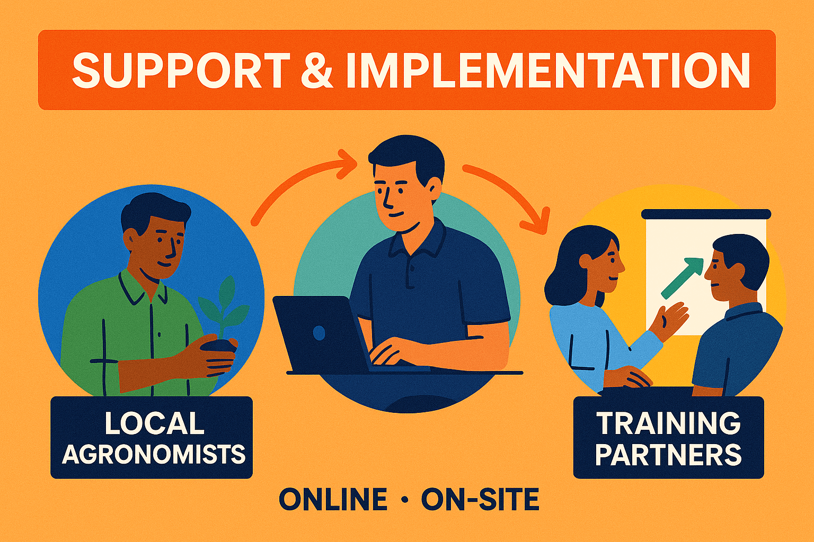
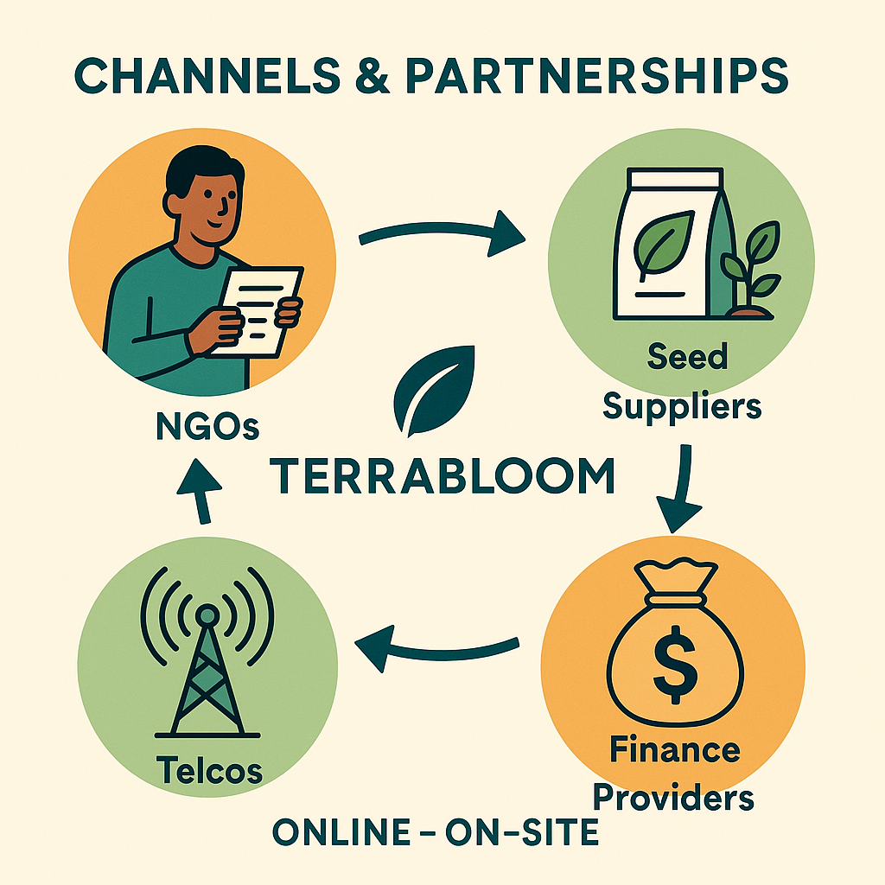

Scaling Model

📦 B2G / B2B / Freemium
TerraBloom operates on a multi-channel model: B2G via government programs, B2B through NGOs and foundations, and freemium access for farmers — ensuring both scale and equity.

🛠️ Support & Implementation
Our team works directly with local agronomists, regional hubs, and training partners to ensure smooth onboarding and adoption — online and on-site.

🔗 Channels & Partnerships
We expand through partnerships with NGOs, seed suppliers, telcos, and finance providers. Each partner brings TerraBloom to new hands and fields.